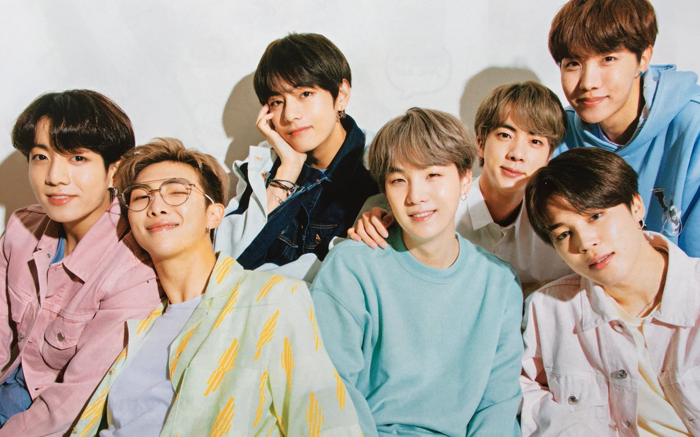

About BTS

Quem é o BTS?
BTS é um grupo sul-coreano formado por sete integrantes:
RM, Jin, SUGA, j-hope, Jimin, V e Jung Kook.
Desde 2013 eles inspiram milhões de pessoas através da música,
levando mensagens de esperança, amor-próprio e crescimento.
BTS PROFILE
BTS (방탄소년단)
Nome em inglês:Beyond The Scene
Estreia:13 de junho de 2013
Empresa:BIGHIT MUSIC (HYBE)
País:Coreia do Sul
Integrantes:7
Fandom:ARMY
Gêneros:K-pop, Hip-Hop, Pop, R&B